SmolVLA와 GridS의 과제에 따른 단계별 성과 및 움직임 비교
SmolVLA Baseline과 GridS 적용 정책이 실제 로봇의 서랍을 열어 큐브를 수납하기, 큐브를 집어 지정 영역에 놓기, 뚜껑을 열어 큐브를 수납하기에서 어떻게 다른 결과를 내는지 비교했습니다.
연구 개요
SmolVLA는 카메라 영상, 작업 지시문, 팔 5축과 그리퍼의 현재 상태로부터 로봇 동작 목표를 생성하는 시각·언어·행동 정책입니다. GridS는 커넥터가 만든 8×8 시각 특징 지도에서 학습된 연속 좌표 16개를 사용해 특징을 보간하고 좌표 임베딩을 더합니다.
Top · Wrist · Belly 영상
시각 인코더 → 커넥터
Baseline
카메라당 64 토큰GridS
카메라당 16 토큰
카메라당 64 토큰GridS
카메라당 16 토큰
SmolVLA 정책 ← 작업 지시 · 관절 상태
팔 5축·그리퍼 목표 → SO-101 제어
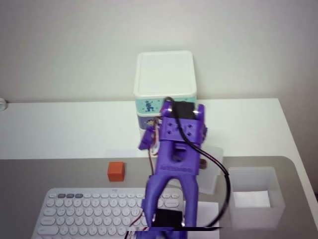
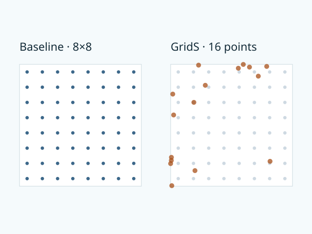
T1 서랍 열기·큐브 수납
손잡이를 잡아 서랍을 열고 큐브을 서랍 안에 넣습니다. 큐브이 서랍 안에 들어가면 최종 성공입니다.
대표 실제 로봇 영상
GridS · T1_1028_G13 · Top
영상과 그리퍼 위치 동기화 보기
시간순 동작 프레임
Baseline · T1_1028_B00 · Top
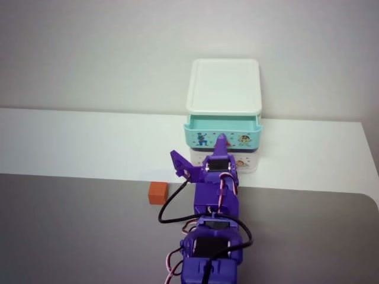
손잡이 재접근f412 · 13.73초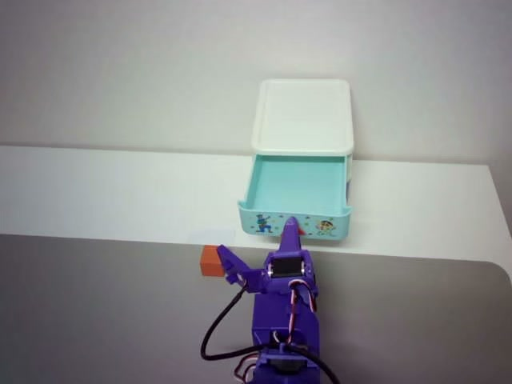
유지 당김f450 · 15.00초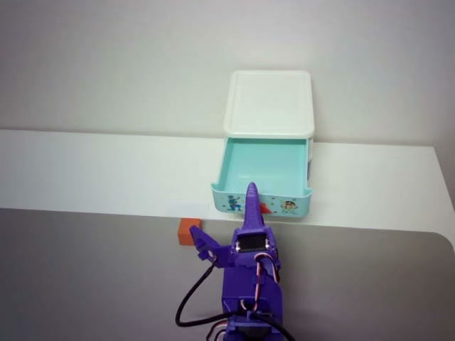
충분 개방f465 · 15.50초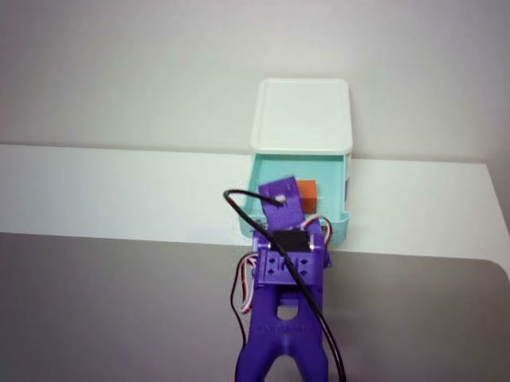
큐브 수납f735 · 24.50초
GridS · T1_1028_G13 · Top
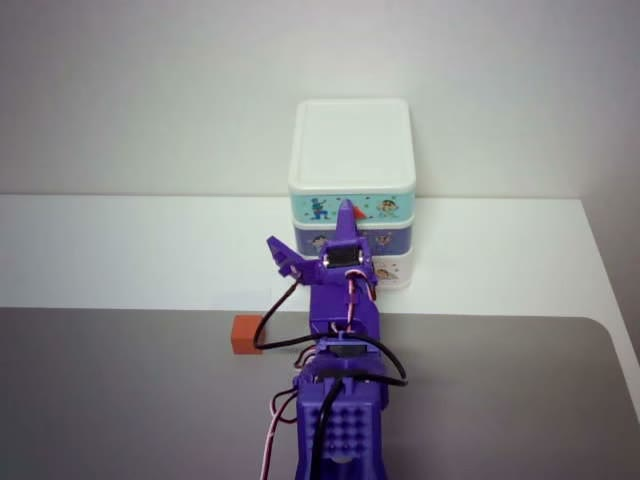
첫 파지f195 · 6.50초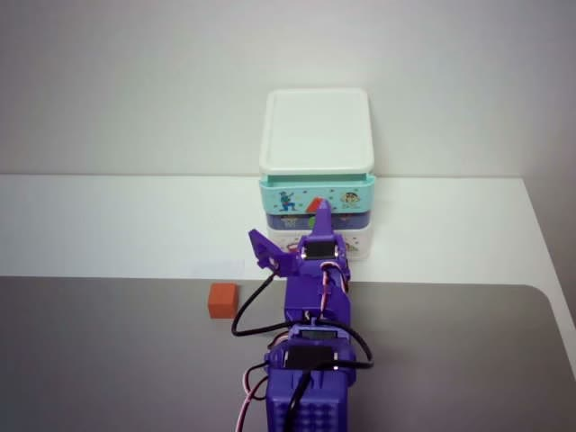
이탈 뒤 부분 개방f262 · 8.73초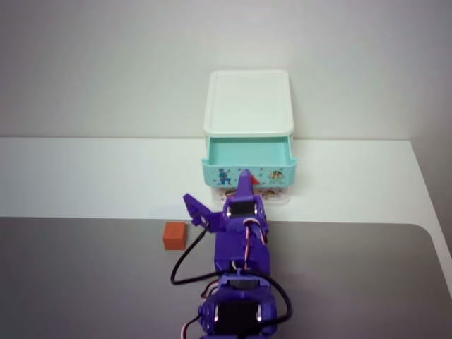
손잡이 재유지f450 · 15.00초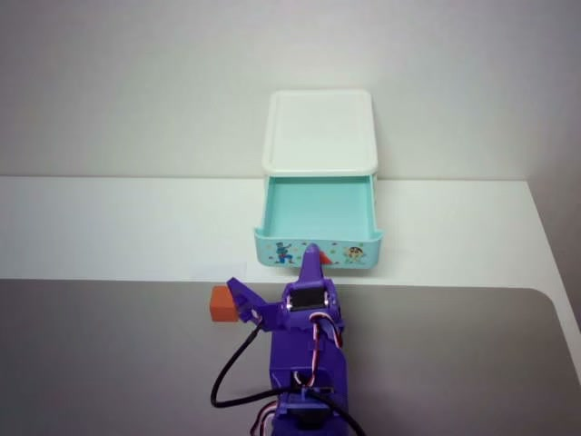
충분 개방f480 · 16.00초
본평가 결과
| 지표 | Baseline | GridS |
|---|---|---|
| 최종 수납 | 12/31 · 38.7% | 18/30 · 60.0% |
| 충분 개방 · 후속 조작이 가능한 개구부 확보 | 19/31 · 61.3% | 27/30 · 90.0% |
첫 실패 후 개방과 저장 입력 재실행
Baseline B00의 gripper.pos는 재접근 f412와 유지 당김 f450에서 모두 7.07점이었습니다. B00은 재접근 뒤 충분히 열고 큐브을 수납했습니다. GridS G13은 첫 파지를 확보한 뒤 손잡이가 이탈했지만 다시 잡아 충분히 열었습니다. 본평가의 확정 첫 실패 뒤 충분 개방은 전체 시행 기준 Baseline 14/31, GridS 16/30이었습니다.
별도 오프라인 진단에서는 GridS G03·G13(충분 개방)과 G14·G04(미충족)의 저장 RGB·상태·지시문을 다시 입력했습니다. G14는 첫 유효 파지 성공, G04는 첫 실패 사례입니다. 동일 관측 안에서 체크포인트와 난수를 고정하고 선택한 보간 특징을 축소했을 때 첫 동작 및 50개 슬롯의 관절 목표 변화가 양쪽 개방 판정 사례에서 관찰됐습니다.
T2 큐브 집어 놓기 (Pick & Place)
큐브를 집어 지정 영역에 놓습니다. 큐브 바닥면 전체가 영역 안에 들어가면 100% 안착이며, 절반 이상 들어간 경우도 별도로 집계했습니다.
대표 실제 로봇 영상
Baseline · T2_1116_B03 · Belly
영상과 그리퍼 위치 동기화 보기
GridS · T2_1116_G04 · Belly
영상과 그리퍼 위치 동기화 보기
시간순 동작 프레임
Baseline · T2_1116_B03 · Belly
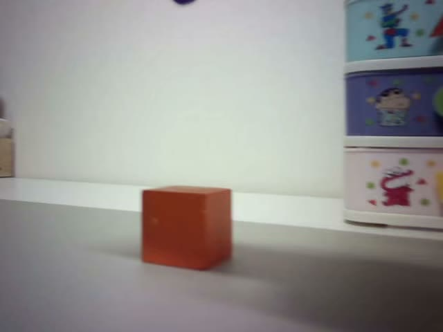
접근 전 큐브f100 · 3.33초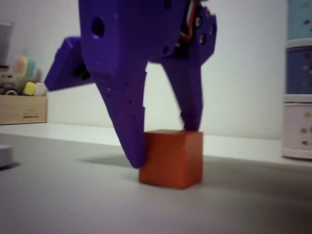
큐브 파지f144 · 4.80초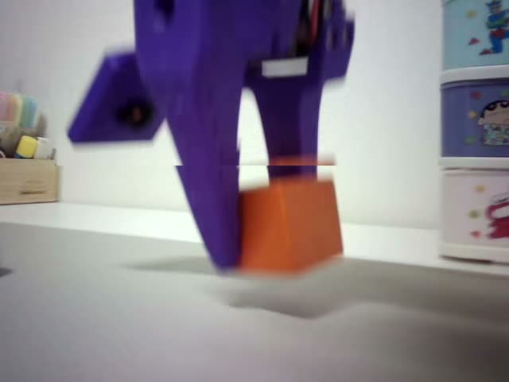
유지 들림f168 · 5.60초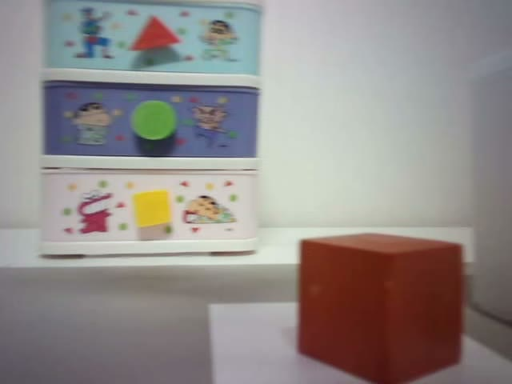
지정 영역에 놓기f264 · 8.80초
GridS · T2_1116_G04 · Belly
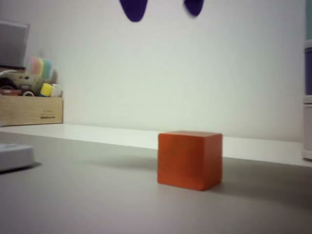
접근 전 큐브f50 · 1.67초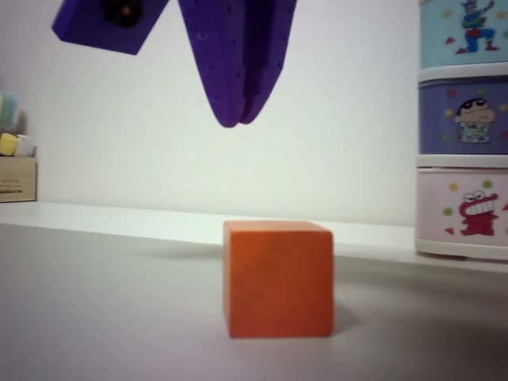
작업면에 남은 큐브f116 · 3.87초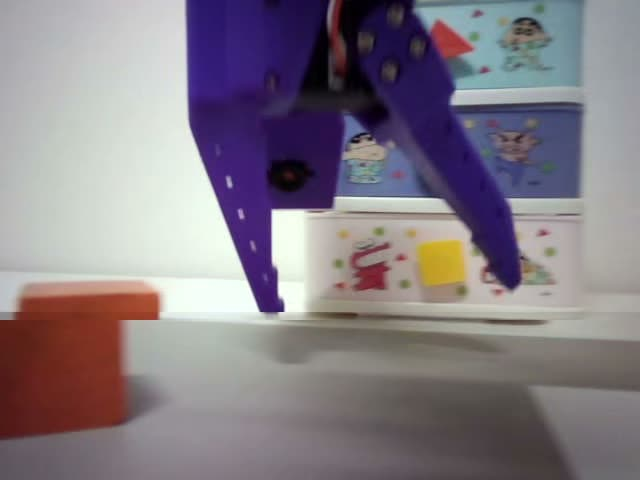
재접근f206 · 6.87초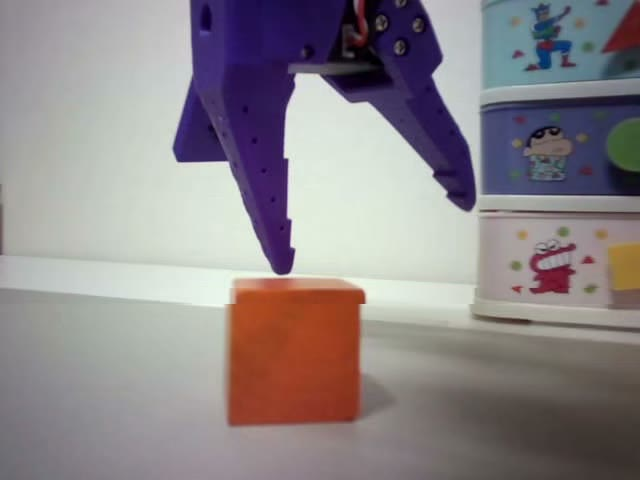
유지 들림 없음f280 · 9.33초
본평가 결과
| 지표 | Baseline | GridS |
|---|---|---|
| 100% 안착 | 6/28 · 21.4% | 4/28 · 14.3% |
| 50% 이상 안착 | 13/28 · 46.4% | 6/28 · 21.4% |
| 시행 중 최종 파지 · 한 번 이상 유지 들림 | 15/28 · 53.6% | 6/28 · 21.4% |
| 첫 유효 파지 · 첫 시도에서 유지 들림 | 9/26 · 34.6% | 4/28 · 14.3% |
후속 평가의 재접근과 유지 들림
첫 실패 10건에서는 첫 재접근·닫힘 후보 주변의 유지 들림이 0/10이었습니다. 위치 2의 Baseline B01은 이후 재시도에서 유지 들림이 확인됐습니다. 별도 시행인 Baseline B03에서는 유지 들림 f168에서 13.76점이 기록됐습니다. GridS G04는 f116에 1.23점을 기록했으며 영상에서 큐브가 작업면에 남았습니다.
후속 평가 최종 파지는 Baseline 8/10, GridS 4/11이었습니다. 50% 이상 안착은 7/10과 3/11, 100% 안착은 7/10과 2/11이었습니다.
T3 뚜껑 열기·큐브 수납
뚜껑을 열어 상자 옆에 놓고 큐브을 상자 안에 넣습니다. 큐브이 상자 안에 들어가면 최종 성공입니다.
대표 실제 로봇 영상
Baseline · T3_1111_B15 · Top
영상과 그리퍼 위치 동기화 보기
GridS · T3_1111_G17 · Top
영상과 그리퍼 위치 동기화 보기
시간순 동작 프레임
Baseline · T3_1111_B15 · Top
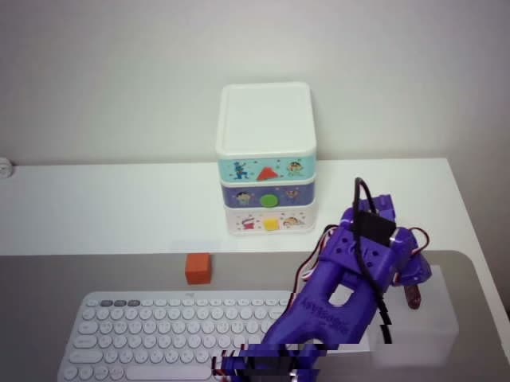
뚜껑 접근f90 · 3.00초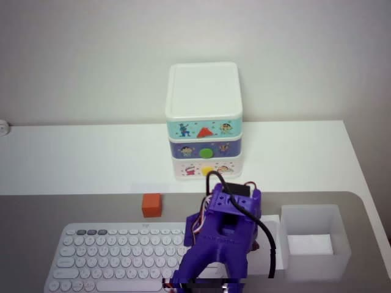
유지 들림f210 · 7.00초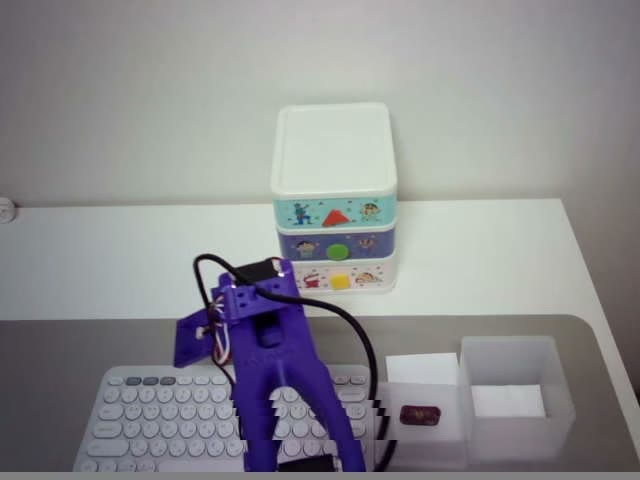
뚜껑 놓기f330 · 11.00초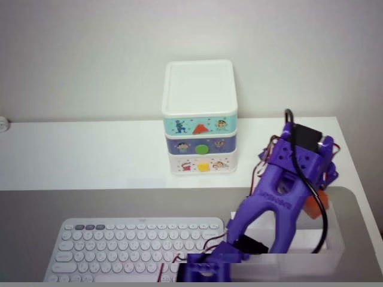
큐브 파지f900 · 30.00초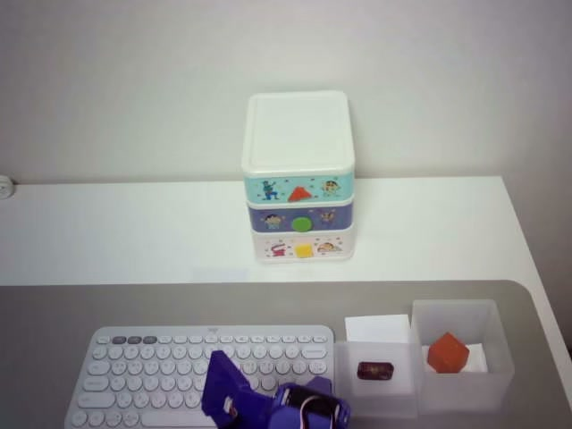
최종 수납f1020 · 34.00초
GridS · T3_1111_G17 · Top
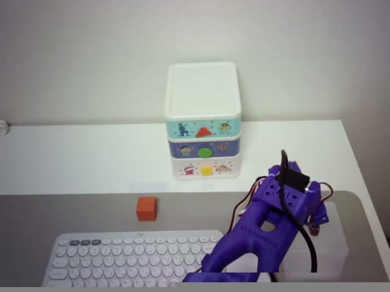
초기 접근f90 · 3.00초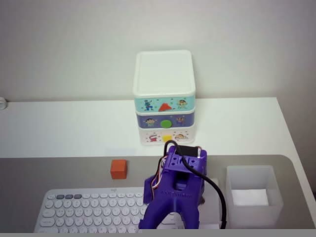
유지 들림f210 · 7.00초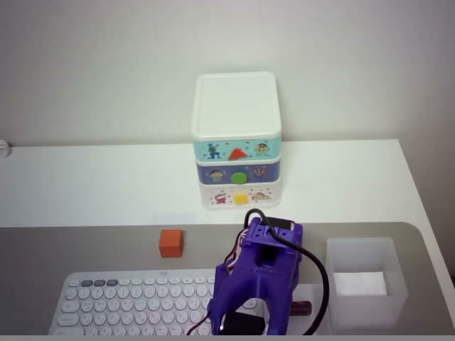
뚜껑 놓기f270 · 9.00초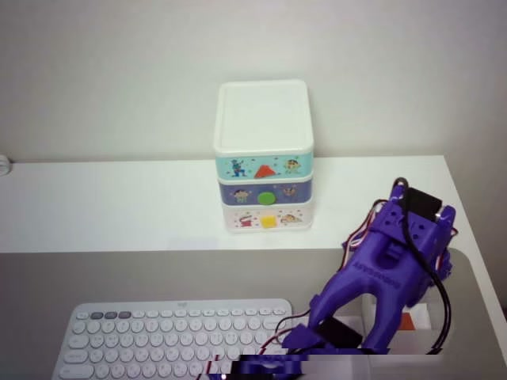
큐브 파지f510 · 17.00초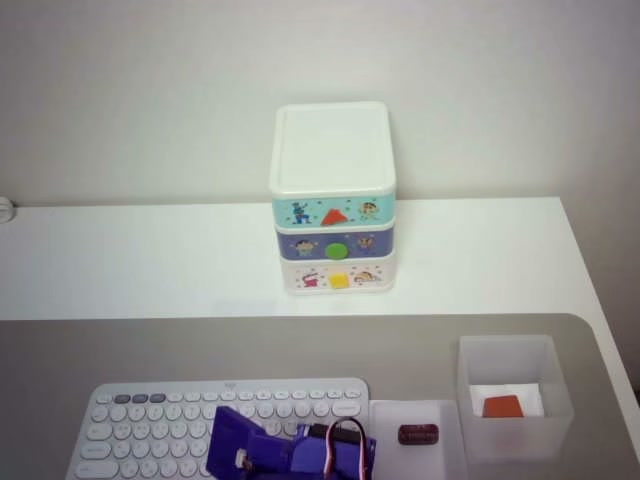
최종 수납f570 · 19.00초
본평가 결과
| 지표 | Baseline | GridS |
|---|---|---|
| 최종 수납 | 22/30 · 73.3% | 13/30 · 43.3% |
| 누적 성공 · 정상 뚜껑 처리 포함 | 19/30 · 63.3% | 13/30 · 43.3% |
| 정상 개방 · 뚜껑을 정상적으로 열기 | 27/30 · 90.0% | 24/30 · 80.0% |
| 정상 뚜껑 처리 · 열고 상자 옆에 놓기 | 24/30 · 80.0% | 23/30 · 76.7% |
손잡이 방향과 후속 큐브 파지
정상 뚜껑 처리는 가로에서 Baseline 13/15, GridS 14/15, 세로에서 11/15, 9/15였습니다. 위 두 시행은 모두 세로 손잡이 사례입니다. B15와 G17은 뚜껑을 상자 옆에 놓은 뒤 큐브를 집어 상자 안에 수납했습니다. 유지 들림 프레임 f210에서 gripper.pos는 B15가 3.05점, G17이 3.44점이었습니다.
같은 세로 방향의 GridS G17과 G15를 저장 그리퍼 목표·위치 및 Belly 영상으로 대조했습니다. 뚜껑을 처리한 뒤 G17은 큐브을 유지해 이동했고, G15는 큐브 유지 들림과 최종 수납을 완료하지 못했습니다.
결론
GridS 적용 결과는 과제별로 달랐습니다. 본평가에서 T1의 최종 수납은 38.7%에서 60.0%로 증가했습니다. T2의 100% 안착은 21.4%에서 14.3%로, T3의 최종 수납은 73.3%에서 43.3%로 감소했습니다. 정상 뚜껑 처리를 포함한 T3 누적 성공은 63.3%에서 43.3%로 감소했습니다.
단계별로 보면 T1의 충분 개방 증가, T2의 시행 중 유지 들림 감소, T3의 정상 뚜껑 처리 이후 수납 격차가 관찰됐습니다. 시행 순서와 접촉 조건 등은 충분히 통제되지 않았습니다.
검정 범위 보기
T1 충분 개방, T2 본평가·후속 평가의 최종 파지, T3 정상 뚜껑 처리를 묶은 Holm 보정 Fisher 정확검정에서는 모두 유의하지 않았습니다. 사후 탐색적 Barnard·Boschloo 검정에서는 T1 충분 개방과 T2 본평가 최종 파지만 보정 후 .05 미만이었습니다.
검정 결과 해석
- T1 서랍. 충분 개방률은 GridS가 더 높았고(90.0% 대 61.3%), 사후 탐색 검정에서 보정 후 .05 미만이었습니다. 전체 본평가에서 최종 큐브 수납은 GridS 18/30(60.0%), Baseline 12/31(38.7%)이었습니다. GridS가 21.3%p 높았고, 차이의 95% 신뢰구간은 −3.56~+42.78%p였습니다. 수납률 사후 탐색 분석에서는 Holm 보정 후 유의 기준을 충족하지 않았습니다(p = .12688).
- T2 큐브 집어 놓기. 본평가에서 시행 중 한 번 이상 큐브를 들어 올려 유지한 비율은 Baseline이 더 높았고(53.6% 대 21.4%), 사후 탐색 검정에서 보정 후 .05 미만이었습니다. 후속 평가의 최종 파지는 이 기준을 충족하지 않았습니다.
- T3 뚜껑. 정상 뚜껑 처리율은 Baseline 80.0%, GridS 76.7%로 사후 탐색 검정에서도 보정 후 .05 기준을 충족하지 않았습니다. 전체 본평가에서 최종 큐브 수납은 Baseline 22/30(73.3%), GridS 13/30(43.3%)이었습니다. Baseline이 30.0%p 높았고, 차이의 95% 신뢰구간은 GridS−Baseline 기준 −50.26~−5.07%p였습니다. 수납률 사후 탐색 분석에서는 Holm 보정 후 유의 기준을 충족하지 않았습니다(p = .07043). Baseline의 22건에는 뚜껑을 정상 처리하지 못하고도 수납한 3건이 포함됩니다. 포스터의 19/30은 정상 뚜껑 처리까지 포함한 누적 성공입니다.
수납률은 선행 단계의 판정과 관계없이 전체 본평가 시행을 분모로 계산했습니다. 충분 개방이나 정상 뚜껑 처리 이후의 조건부 비율은 해당 단계를 통과한 시행을 분모로 계산합니다. 이번 양측 Fisher 정확검정의 Holm 보정은 두 수납률 비교에 한정했습니다. 신뢰구간은 각 비교의 Newcombe 95% 구간입니다. 정책별 실행 순서와 시행 간 독립성의 불확실성을 고려해 표본에서 관찰된 차이로 해석합니다.